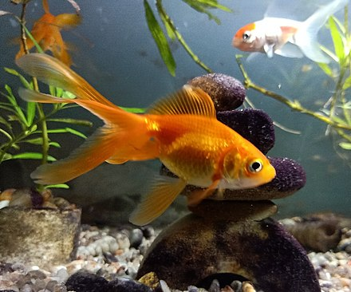

Goldfish Facts
The goldfish (Carassius auratus) is a freshwater fish in the family Cyprinidae of order Cypriniformes. It is one of the most commonly kept aquarium fish. A relatively small member of the carp family (which also includes the Prussian carp and the crucian carp), the goldfish is native to East Asia. It was first selectively bred in ancient China more than 1,000 years ago, and several distinct breeds have since been developed. Goldfish breeds vary greatly in size, body shape, fin configuration and coloration (various combinations of white, yellow, orange, red, brown, and black are known).